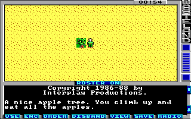

Game Tutorial Step 2: Adding a simple print action
With the print action you can output one or more messages when the player steps on a specific square. It's also possible to change the action class and the action of the square after the message has been printed. In this step you'll learn how to create a nice apple tree which generate a message when you step on it the first time and generate no more messages on all future visits.
Add the action container
Because this is the first print action in the map you first have to create the action container for all print actions. You do this by inserting the following code after the battleStrings tag:
<actions actionClass="1"> </actions>
The actionClass attribute is needed to tell the game which type of actions are in this container. Action class 1 is for the print actions. This value of this attribute also defines the character which must be used in the actionClassMap tag to connect a square to this action class. In the actionClassMap you use a hexadecimal value (0-9, a-f) to refer to the action classes.
Add the new string
Go to the strings section and add a string with id 1:
<string id="1">\rA nice apple tree. You climb up and eat all the apples.\r</string>
By the way: The \r is a line-break. It's used often in messages so they are separated properly from other printed messages.
Add the print action
Now go to the action container you created and add the print action:
<actions actionClass="1">
<print id="0" newActionClass="0" newAction="0">
<message>1</message>
</print>
</actions>
What is this code doing? It defines a print action with the id 0 which just outputs the message string with id 1. You can add more message tags if you want to output multiple strings but in this example one message is sufficient. And after the message has been printed the square is connected to action class 0 and action 0 which just means: Do nothing. If you don't use the newActionClass and newAction attribute then the square stays untouched and outputs the text message every time you visit it.
Connect the square to the print action
Now you need to connect a square with this new action and you also want to draw a apple tree on the map. First of all you must decide which square you want to connect to this action. You have to change the values at exact the same position in the actionClassMap, actionMap and tileMap. In the actionClassMap set the square to 1 (For the action class 1). In the actionClass you can leave the current value because the two dots you have there is the same as 00. But I recommend setting the square to 00 so you can see that there is something special on this square. In the tileMap set the desired square to the value 42. You may wonder how the hell we know which number is the apple tree. It works like this: In the Wasteland Wiki is a list of the original tilesets at the bottom of the page. We have selected tileset 1 for our demo map and in this tileset you can see the apple tree at position 56. But because the tile numbers 0-9 are occupied by the sprites from the file ic0_9.wlf you have to add 10 to the tile number. So the apple tree has the number 66. Convert this to hex (42) and you have the value which must be used in the tileMap.
Ok, that's it. Pack a new game file and start up Wasteland and you'll see the apple tree. and when you step on it you'll see the message. Step on it again and you'll see no more messages. What a great game, isn't it?
You can download the current state of the map here: map01.xml.
